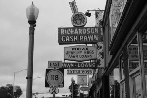

The Beginning

Founded in 1881 as a headquarters for the southern transcontinental rail route, the town draws its name from David L. Gallup, a paymaster for the Atlantic and Pacific Railroad (later part of the Burlington Northern Santa Fe Railroad).
Resting in the heart of Native American ancestral homelands, Gallup is surrounded by vibrant Indigenous nations, with the Navajo Nation at their doorstep, Zuni Pueblo to the South, and the Hopi Reservation in Arizona.
Long before modern Gallup took shape, the region was home to the Ancestral Puebloans, who lived here from roughly 300 BCE to 1250 CE. They cultivated corn, beans, and squash, crafted artisanal goods, and built intricate structures that served as both homes and gathering spaces. Their legacy endures across the region’s national monuments, tribal parks, and archaeological sites.
Centuries later, trading posts emerged as centers of exchange and artistry. Today, trading posts are the best places to find handcrafted Native American jewelry, pottery, and textiles.
Gallup’s deep Indigenous roots continue to shine each August during the Gallup Inter-Tribal Indian Ceremonial, established in 1922. One of the oldest celebrations of its kind in the country, the event brings together tribal nations through art, dance, and song, honoring the living cultures that define the region..